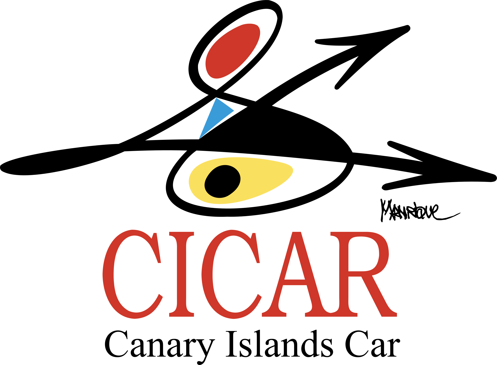

BTS SIO – Option SISR
Épreuve E6
AFPI – Marcq-en-Barœul | Année scolaire 2024 – 2026
Mission d'infrastructure réseau et systèmes pour agences de location de véhicules
Objectif : Déployer une infrastructure fiable, sécurisée et homogène pour la nouvelle agence CICAR dans les Îles Canaries.
La CICAR est une jeune société de location de véhicule de tourisme en plein essor implantée depuis 2012 dans les iles canaries. Elle possède une flotte de 65 véhicules répartis dans 3 agences sur les iles de Tenerife (qui est aussi le siège de l'entreprise), Lanzarote et Fuerteventura.
Elle souhaite aujourd'hui se développer sur les quatre autres îles des canaries qui sont : La Palma, el Hierro , la Gomera et Gran Canaria.
Les sites choisis sont, comme pour les autres agences, les aéroports de ces quatre iles, respectivement : Los Llanos de Aridane, Valverde , San sebastian de la Gomera et las Palmas de Gran Canaria.
Elle possède déjà les locaux qui sont loués par les autorités aéroportuaires et qui comprennent une alimentation électrique ondulée avec une connexion internet haut débit ainsi que les bureaux équipés de prises murales RJ45 de catégorie 6 raccordées à une baie de brassage incorporée dans la baie informatique.
Le gérant de la société Cicar a réalisé un appel d'offre auprès des SSII insulaires. Le patron de la société SIO-Net à laquelle vous appartenez a décidé de répondre à ce projet. Il a détaché une équipe par agence pour mener à bien cette mission.
Dans un soucis d'harmonisation, les équipements d'interconnexion et les serveurs sont identiques aux autres agences (siège exclu) ; c'est-à-dire : solution incorporée dans une baie 24U, routeur pare-feu SNS310 Stormshield, Switch manageable gigabit Tp-Link TL-SG3424, serveur HP Prolian DL 360 Gen 10 en RAID 5, point d'accès wifi TP-Link TL-WA901-N.
Le serveur HP virtualise sous Esxi 7.0 les différents serveurs nécessaires à l'infrastructure. Les plans d'implantation et schémas réseaux sont fournis en annexe ainsi qu'un plan d'adressage (IP fixe) imposé par le FAI des aéroports. Les adresses du Lan respectent la suite logique des premières agences, à savoir 192.68.51.0 pour Lanzarote et 192.168.52.0 pour Fuerteventura. Le siège de Ténériffe étant lui en 192.168.57.0.
Suite à l'appel d'offre et après acceptation de votre devis, le directeur de la Cicar vous a choisi afin d'informatiser les nouvelles agences et après réception finale du projet fonctionnel vous a accordé toute sa confiance dans les modifications ultérieures qu'il souhaite apporter.
Il vous est demandé de paramétrer le boitier Stormshield SNS 310 afin d'offrir un accès web sécurisé aux employés de l'agence ainsi que la liaison VPN avec le siège. Le VPN gérera les flux vers les autres agences hormis ceux à destination d'internet.
Vous installerez par la suite l'hyperviseur ESX Vmware sur le serveur HP Prolian ainsi que votre contrôleur de domaine avec AD, DNS, DHCP sous Windows Serveur 2019 puis vous intégrerez les postes clients au domaine.
Des GPO « standards » des autres agences permettront une configuration automatique des postes clients (environnement, mappage de lecteurs réseaux, restrictions etc..) ainsi qu'une politique de gestions des mots de passe du domaine (par PSO).
Vous déploierez également le wifi pour votre agence.
Après une première saison touristique passée, Le gérant souhaite modifier la partie wifi des agences. Cet accès sert en effet aux employés sur les parkings afin de réaliser les opérations nécessaires à la prise de bord et à la restitution des véhicules (kilométrage, jauge carburant, coups ou rayures éventuelles…) à l'aide de tablettes tactiles.
Cependant, en raison du nombre importants de travailleurs saisonniers et afin de conserver une sécurité du réseau, il est souhaitable de ne plus installer de clés WPA sur ces équipements, trop facilement copiables.
Vous aurez donc à mettre en place un accès wifi par serveur radius qui identifiera par couple login/mdp les utilisateurs enregistrés dans l'annuaire d'entreprise souhaitant accéder au réseau. Afin de faciliter les adjonctions d'utilisateur dans l'annuaire, il vous est également demandé de fournir un script en PowerShell permettant de gérer les nouveaux embauchés à l'aide d'un fichier Excel. Si votre intervention s'avère efficace, la société SIO-Net aura à charge de réaliser la modification dans les trois premières agences qui existent depuis deux ans.
Le directeur de la Cicar souhaite externaliser les serveurs utilisés pour la prise de réservation des véhicules, service actuellement hébergé sur les serveurs du siège (Suite à un incident de perte de connexion inter-îles ayant pénalisé l'activité plusieurs jours).
Chaque agence disposera maintenant de 2 serveurs en miroir situés dans le LAN. Ils seront installés sur une distribution Debian en ligne de commande limitant les surfaces d'attaque avec les packages Apache, Php, Maria-db et Adminer virtualisé sur l'hyperviseur ESXi. Le site sera identique aux agences existantes et sera installé par l'équipe Dev.
Il sera accessible pour les internautes par le biais d'un HA-Proxy situé dans une DMZ permettant du load balancing vers les 2 serveurs du LAN.
Une sauvegarde automatique des VM de l'agence à l'aide de l'outil Veeam Backup se fera toutes les nuits vers un NAS en Raid 5 situé au siège. Les fichiers de configuration des commutateurs, des points d'accès-wifi, des Appliances SNS seront également déposés sur ce NAS.
La direction souhaite que chaque agence dispose maintenant de son propre serveur de messagerie (avec antispam et antivirus) et qu'il soit installé dans la DMZ.
La gestion des boites mail sera couplée à votre Active directory. Les boites aux lettres seront créées de façon automatique avec un script bash.
Afin d'avoir une vue globale des dysfonctionnements dans chaque agence (matériels et/ou logiciels), il a été décidé d'installer un logiciel de supervision (Centreon) au siège.
Ce dernier sera complété par un serveur syslog relevant en temps réel les menaces ou anomalies détectées par les boitiers SNS de chaque agence ainsi que celles des agents installés sur les contrôleurs de domaine.
Les iles étant assez disséminées dans tout l'archipel, l'administrateur du siège souhaite un accès distant sécurisé sur tous les équipements paramétrables et serveurs de chaque agence.
Ces accès seront centralisés sous MobaXterm.
Vous appuierez l'administrateur du siège pour l'aider à recenser ces connexions ainsi que pour ouvrir les accès dans les pare-feu de chaque île.
Une double authentification devra être mise en place pour sécuriser les accès aux pages d'administration du SNS. La méthode choisie sera le One time password avec l'extension google authenticator.
Afin de répondre au mieux aux soucis des utilisateurs, il a mis en place un logiciel recensant le parc installé appelé GLPI_Agent couplé avec un logiciel de helpdesk type GLPI qui enverra les besoins ou tickets d'incidents des chefs d'agence à l'administrateur central.